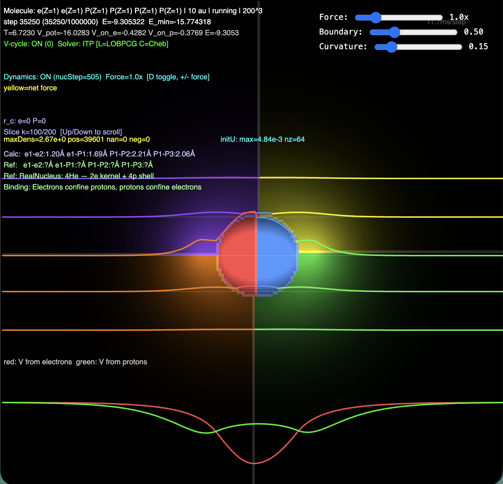

RealQM is Quantum Mechanics as 3D multi-phase continuum mechanics based on non-overlapping electron densities interacting by Coulomb potentials giving forces on nuclei. Complexity scales only with the number of mesh points/spatial resolution, allowing realistic simulation of protein folding, chemical reactions and material mechanics. RealQM opens entirely new possibilities of unified micro-macro simulation of physical systems on a laptop.
∂u/∂τ = ½∇²u + (K − 2P)u (wave relaxation)∂T/∂τ = D ∇²T + Q(x,τ) with Q = −∂e_wave/∂τatom_thermal.html demonstrates exact energy bookkeeping for He
relaxation: red E_wave decreases, green E_thermal grows, yellow sum stays flat.
Z(β) = Σn exp(−βEn) = Tr exp(−βH).
For realistic many-body systems the spectrum is exponential in $N$ and computationally
inaccessible — practical applications use model Hamiltonians, mean field, perturbation theory,
or path-integral / quantum Monte Carlo sampling.
Z(β) = ΣC exp(−βEC), but the sum is over
real-space tilings rather than over 3N-dim eigenstates. Each EC is a
browser-class computation; Boltzmann weights and free energy F = −kBT ln Z sit on
top unchanged.
USER_DAMPING + langevinKT in molecule.js) samples the
Boltzmann distribution by ergodic time-averaging — never computes Z explicitly.
molecule.js — Voronoi-partition solver. Each electron is assigned a
spatial “territory” via a label field (one integer per grid cell), and Coulomb
repulsion is computed from the per-territory density. Used for protein-scale simulations
(216-water ice melt, alpha-helix folding, hairpin folding) where the cost of explicit
orbital orthogonality would be prohibitive. The label partition is recomputed periodically;
between recomputations the territories are frozen.
mol_fast.js — unit-density orbital solver with shell splitting.
Each electron is its own orbital field (NELEC × N³ floats), evolved by ITP, with
effective Pauli exclusion via overlap penalty between orbitals. Supports multi-occupancy
(e.g. C with one 4-electron orbital) and angular splitting (sphere, hemi, third, tetra
sector wedges). Used for small molecules and dimers where orbital structure matters.
Hard limit on atom count (MAX_ATOMS=16).
realqm_rb.js red-black GPU, molecule_h2.js,
molecule_wlap.js) and the spherical-symmetry atom solver behind
atom_simulator.html.
USER_NUCLEI, USER_NORM_TARGETS, and other
configuration globals, then loads the relevant .js solver plus
p5.js for the canvas. mol_fast renders a 2D density slice (z=N/2 plane) and a
rotatable 3D ball-and-stick view. molecule.js adds backbone visualization, force arrows,
and runtime overlays for energy/dipole/angles. The interactive feel is the practical
breakthrough: WebGPU keeps a 200³ grid responsive on a single laptop GPU.
*.html in the repo are not solvers but parameterized test cases: ~150 of
them, each pinning a system (atom, dimer, protein) at a specific geometry with specific
kernels, then loading molecule.js or mol_fast.js. Many are exploratory and somewhat
redundant. The Gallery (this page) curates the validated subset.
USER_NUCLEI entries. The lesson learned
in this session: for honest comparisons, all atoms of a kind must use the same kernel
across the test set.
| Code | Lines | What it does |
|---|---|---|
| RealQM (this collection) | ~8 k | multi-atom solver, dynamics, ions, peptide MD, gallery UI |
| molecule.js | 5 285 | main solver + protein folding biases |
| mol_fast.js | 1 599 | compact shell-split solver (atoms, ions) |
| realqm_rb.js | 1 222 | red-black GPU builder solver |
| For comparison (Standard QM/DFT, decades of development): | ||
| Gaussian | ~3–4 M | commercial reference, all major methods |
| NWChem | ~3–4 M | parallel HF/DFT/CC, periodic + molecular |
| GAMESS-US | ~2 M | long-history Fortran QM package |
| Q-Chem / ORCA | ~1–2 M | modern HF/DFT/CC packages |
| CP2K | ~1 M | DFT-MD, Gaussian + plane-waves hybrid |
| VASP | ~500 k | plane-wave DFT for solids |
| PySCF / Psi4 | ~300–500 k | modern Python-fronted QM |
| Quantum ESPRESSO | ~200–300 k | plane-wave DFT, AIMD |
| Job | RealQM | Standard QM/DFT |
|---|---|---|
| Single H2O equilibrium energy + dipole | 1 GPU laptop, <1 min | 1 CPU, ~minutes (CCSD(T): hours) |
| Water dimer geometry + binding | 1 GPU, ~minute | 1 CPU, hours; CCSD(T): ~day |
| Na+(H2O)6 + dynamics 1 ps | 1 GPU, <1 min interactive | DFT-MD: 16-32 cores, hours |
| 216-water cluster, dynamics, 1 ns | 1 GPU, hours real-time | DFT-MD: 64-256 cores HPC, weeks |
| Protein folding small peptide (chignolin), µs | 1 GPU, hours (with biases) | DFT-MD: not feasible; classical Anton: weeks |
| Protein-in-water 100 residues + 5000 H2O, ns | 1 GPU, day-scale | impossible at full DFT; classical MD: cluster, days |
Spherical multiphase Atom Simulator (ground-state energies Li–Rn to ~1%) and the reduced-kernel validation against observed atomic spectra: alkali outer-electron levels (Li, Na, K, Rb, Cs) and alkaline-earth triplet excited states (Be, Mg, Ca).
| Atom | Z | Shells | Computed | Observed |
|---|---|---|---|---|
| Li | 3 | (2)+1 | −7.55 | −7.48 |
| Be | 4 | (2)+(2) | −15.14 | −14.57 |
| B | 5 | (2)+(2+1) | −25.3 | −24.53 |
| C | 6 | (2)+(2+2) | −38.2 | −37.7 |
| N | 7 | (2)+(3+2) | −55.3 | −54.4 |
| O | 8 | (2)+(3+3) | −75.5 | −74.8 |
| F | 9 | (2)+(3+4) | −99.9 | −99.5 |
| Ne | 10 | (2)+(4+4) | −132.4 | −128.5 |
| Na | 11 | (2)+(4+4)+(1) | −165 | −162 |
| Mg | 12 | (2)+(4+4)+(2) | −202 | −200 |
| Al | 13 | (2)+(4+4)+(2+1) | −244 | −243 |
| Si | 14 | (2)+(4+4)+(2+2) | −291 | −290 |
| P | 15 | (2)+(4+4)+(3+2) | −340 | −340 |
| S | 16 | (2)+(4+4)+(4+2) | −397 | −399 |
| Cl | 17 | (2)+(4+4)+(3+4) | −457 | −461 |
| Ar | 18 | (2)+(4+4)+(4+4) | −523 | −526 |
| Ca | 20 | (2)+(4+4)+(8)+(2) | −670 | −680 |
| Ti | 22 | (2)+(4+4)+(10)+(2) | −848 | −853 |
| Cr | 24 | (2)+(4+4)+(12)+(2) | −1039 | −1050 |
| Fe | 26 | (2)+(4+4)+(14)+(2) | −1260 | −1272 |
| Ni | 28 | (2)+(4+4)+(16)+(2) | −1516 | −1520 |
| Zn | 30 | (2)+(4+4)+(18)+(2) | −1773 | −1795 |
| Ge | 32 | (2)+(4+4)+(18)+(2+2) | −2089 | −2097 |
| Se | 34 | (2)+(4+4)+(18)+(4+2) | −2416 | −2428 |
| Kr | 36 | (2)+(4+4)+(18)+(4+4) | −2766 | −2788 |
| Xe | 54 | (2)+(4+4)+(18)+(18)+(4+4) | −7355 | −7438 |
| Rn | 86 | (2)+(4+4)+(18)+(32)+(18)+(4+4) | −22800 | −23560 |
| System | config | E (Ha) | obs | Δ |
|---|---|---|---|---|
| Li | 1s² + 2s (3D, 200³/12 au) | −7.43 | −7.478 | +0.05 |
| Li⁺ | 1s² (3D, 200³/12 au) | −7.19 | −7.279 | +0.09 |
| IP = E(Li⁺)−E(Li) | +0.24 | +0.198 | +0.04 | |
| F | 2+4+3 (Atom Simulator) | −104.06 | −99.73 | −4.33 |
| F⁻ | 2+4+4 (Atom Simulator) | −104.16…−104.20 | −99.85 | −4.33 |
| EA = E(F)−E(F⁻) | +0.10…+0.14 | +0.125 | ≈ 0 |
| Atom | Zkernel | rc (au) | RMS (Ha) | RMS (eV) |
|---|---|---|---|---|
| Li | 1.00 | 1.95 | 0.002 | 0.05 |
| Na | 0.95 | 2.00 | 0.004 | 0.11 |
| K | 1.00 | 2.90 | 0.004 | 0.12 |
| Rb | 1.00 | 3.10 | 0.005 | 0.14 |
| Cs | 1.00 | 3.30 | 0.005 | 0.14 |
| Atom | rc RealQM | rc fit | RMS at fit | RMS at RealQM rc |
|---|---|---|---|---|
| Li | 1.69 | 1.95 | 0.002 | 0.005 |
| Na | 2.30 | 2.00 | 0.004 | 0.004 |
| K | 4.00 | 2.90 | 0.004 | 0.010 |
| Atom | config | Zkernel | rc (au) | RMS (Ha) | RMS (eV) |
|---|---|---|---|---|---|
| He ortho | 1s + outer (triplet) | 1.00 | 2.53 | 0.0035 | 0.10 |
| He para | 1s + outer (singlet) | 1.04 | 3.25 | 0.0043 | 0.12 |
| Be triplet | 2+1+1 nested | 1.30 | 4.36 | 0.040 | 1.1 |
| Be singlet | 2+2 split angularly | 1.00 | 3.36 | 0.004 | 0.11 |
| Mg triplet | [Ne] + 2 valence | 1.21 | 5.15 | 0.027 | 0.74 |
| Ca triplet | [Ar] + 2 valence | 1.58 | 6.25 | 0.010 | 0.27 |
u += ½d·∇·(w∇u) + dt·(K-2P)·u·w // ITP eigensolve P += dt·(ΔP + 2π·u²) // Poisson solve w += dt·|c|·Δw + dt·c·|∇w| // front tracking
| Geometry | E (Ha) | K-W exact (Ha) | Diff |
|---|---|---|---|
| sep=1.6 au (near eq) | −1.22 | −1.17 | −0.05 (4% deeper) |
| sep=6 au (dissociated) | −1.07 | −1.00 | −0.07 (7% deeper) |
| E_bind = E(eq) − E(far) | −0.15 | −0.17 | 88% of exact |
c_i = u_i − u_j // advection driver w_i += 2dt·|c_i|·Δw_i + 10·dt·c_i·|∇w_i| // front track u_i += ½d·∇·(w_i∇u_i) + dt·(K − 2P_i)·u_i·w_i // ITP P_j += dt·(ΔP_j + 2π·u_{1−j}²) // Poisson, other electron's density
Per-atom convergence tests written during development, retained here for reproducibility. The Atom Simulator and the Ionization energies card supersede these — start there.
Static electron density calculations and nuclear dynamics on 200³ grids.
| Configuration | E (Ha) | μ (D) | Notes |
|---|---|---|---|
| Pure covalent (Li + H neutral, split-shell) | −7.74 | 2.77 | Basis state 1 |
| Pure ionic (Li&sup+; + H&sup-;, 1s² hemi both) | −8.02 | 7.43 | Basis state 2 |
| Linear mix (67% ion, 33% cov) — matches μ_expt | −7.93 | 5.88 | c² solved from dipole |
| Experimental LiH (CCSD(T)/exact) | −8.07 | 5.88 | Reference |
| Mix weight comparison | Ionic fraction | Covalent fraction |
|---|---|---|
| RealQM (from linear combination matching μ) | 67% | 33% |
| Standard QM / VB (textbook) | ~77% | ~23% |
mol_fast.js, no TF correction. Best result of the non-split series: closest binding to experiment, and top-tier dipole.| Config | O-H bond (au) | E (Ha) | |FH| | μ (D) | Note |
|---|---|---|---|---|---|
| Z=2 pseudo, r_c=0.5 | 1.814 | −3.75 | 0.06 contr. | 0.80 | 43% of μ_expt — too few electrons |
| Z=2 pseudo, r_c=0.3 | 1.814 | −4.23 | 0.06 contr. | 1.10 | 59% of μ_expt (tighter cusp) |
| Z=3 pseudo, r_c=0.5 | 1.814 | −6.84 | 0.05 | 1.50 | ← 81% of μ_expt, near zero-force |
| Z=3, stretched (2×) | 3.624 | −6.30 | — | — | dissociation reference |
| Quantity | Model (Z=3, r_c=0.5) | Experiment | Ratio |
|---|---|---|---|
| Binding energy ΔE | 0.54 Ha (14.7 eV) | 0.37 Ha (10.1 eV) | 1.46× |
| Dipole moment μ | 1.5 D | 1.85 D | 81% |
| Equilibrium O-H bond | ~1.8 au | 1.814 au | ~0% |
| Config | H-O-H angle | μ (D) | Note |
|---|---|---|---|
| r_c=0 (no cutoff) | drifts 111→100→95° | 1.836 | best dipole moment, geometry wanders |
| r_c=0.5 (stable) | 101.6° | 1.638 | ← stable geometry near exp 104.5° |
| Quantity | Model (best dipole) | Experiment | Ratio |
|---|---|---|---|
| Dipole moment μ | 1.836 D | 1.85 D | 99% |
| H-O-H angle (stable rc=0.5) | 101.6° | 104.5° | 97% |
mol_fast.js, no TF correction.| C–H bond (au) | E (Ha) | |F| (Ha/Bohr) | Note |
|---|---|---|---|
| 1.5 | — | ∼0.4 expanding | compressed, strong repulsion |
| 1.6 | — | ∼0.3 expanding | compressed |
| 1.8 | — | small expanding | near model minimum |
| 1.9 | — | < 0.002 | ← model equilibrium (zero-force point) |
| 2.0 | — | small contracting | slightly stretched |
| 2.054 | −13.17 | modest inward | experimental C–H bond (1.087 Å) |
| 4.108 | −12.03 | on decay tail | 2× stretched (dissociation ref) |
| Quantity | Model | Experiment | Ratio |
|---|---|---|---|
| Equilibrium bond length | ~1.9 au | 2.054 au | −8% |
| Binding energy ΔE | 1.14 Ha (31 eV) | 0.627 Ha (17 eV) | 1.82× |
mol_fast.js, no TF correction.| N–H bond (au) | |FH| (Ha/Bohr) | μ (Debye) | Note |
|---|---|---|---|
| 1.80 | ~0.03 expanding | ~1.2 | slightly compressed |
| 1.82 | < 0.03 | ~1.2 | ← model equilibrium (zero-force) |
| 1.85 | ~0.03 contracting | ~1.2 | slightly stretched |
| 1.912 | ~0.05 contracting | 0.93 | experimental N–H bond (1.012 Å) |
| Quantity | Model (at 1.82) | Experiment | Ratio |
|---|---|---|---|
| Equilibrium N–H bond | ~1.82 au | 1.912 au | −5% |
| Dipole moment μ | ~1.2 D | 1.47 D | ~81% |
| Binding energy (from earlier scan) | 0.98 Ha (27 eV) | 0.44 Ha (12 eV) | 2.22× |
| r_c | RealQM D_e (Ha) | RealQM (eV) | Real atom | Exp D_e (Ha) | Exp (eV) |
|---|---|---|---|---|---|
| 0.0 | −0.1543 | −4.20 | H2 | −0.1745 | −4.75 |
| 0.3 | −0.0609 | −1.66 | — | — | — |
| 0.4 | −0.0561 | −1.53 | — | — | — |
| 0.5 | −0.0561 | −1.53 | Li2 | −0.039 | −1.05 |
| 0.6 | −0.0490 | −1.33 | — | — | — |
| 0.65 | −0.0201 | −0.55 | — | — | — |
| 0.7 | −0.0163 | −0.44 | — | — | — |
| 0.8 | −0.0100 | −0.27 | Na2 | −0.027 | −0.73 |
| r_c | E(R=3) | E(R=6) | E_bind (Ha) | E_bind (eV) | Real molecule | Exp (eV) |
|---|---|---|---|---|---|---|
| 0.0 | — | — | — | — | He2 | −0.0009 |
| 0.3 | −10.12 | −10.05 | −0.07 | −1.9 | — | — |
| 0.5 | −8.09 | −7.90 | −0.19 | −5.2 | O2 | −5.2 |
| 0.8 | −6.40 | −6.15 | −0.25 | −6.8 | — | — |
| Model | r_c | E_bind (Ha) | E_bind (eV) | Exp (eV) |
|---|---|---|---|---|
| Split (4 domains) | 0.5 | −0.19 | −5.2 | −5.2 |
| Split (4 domains) | 0.8 | −0.25 | −6.8 | −5.2 |
| Non-split, no SIC factor | 0.8 | −0.47 | −12.8 | −5.2 |
| Non-split, (n-1)/n SIC + T-fix | 0.8 | −0.27 | −7.3 | −5.2 |
molecule_h2.js. Split model with r_c=0.5 matches O2 exactly. Non-split without corrections overbinds ~2.5×; with (n-1)/n SIC retaining real intra-orbital Coulomb + gradient skip at r_c boundary, overbinding drops to ~1.4× — residual excess is the missing inter-orbital exchange.Cations, anions, ion pairs, and their water shells. Anion chemistry enabled by Option B (Z=k kernel + target=k+1 electrons) representation.
Proton transfer, ion formation, salt dissolution, enzyme catalysis, and bond breaking — driven by electron density forces.
Water clusters, ice, metallic bonding, and phase transitions.
aLat = 7.0 Å
is approximate. With slider at T = 0 K, watch |F|inner in the
controls panel. Wait ~30 s to plateau, note the value. Type a new aLat (try 6.5, 7.0, 7.5)
and click apply & reload. The aLat with the smallest |F|inner is the
true equilibrium.USER_SHEAR_RATE) added to molecule.js for
ice-melt experiments. No frozen layers, no surface artifacts — deformation is uniform shear by construction.
nucMass() in molecule.js returns the proton mass (~1836 a.u.) for
any atom with Znuc=1, regardless of species. Real Na (~42 000 a.u.) and Cl (~64 000 a.u.) would
slow the dynamics by a factor of ~25, but ratios γ/γ̇ are preserved.nacl_shear.html,
nacl_shear_stress.html) hit the same finite-system limitations.| Geometry | E (Ha) | Notes |
|---|---|---|
| R = 2.196 au (equilibrium) | −6.77 | arch=2, 10000 steps |
| R = 6.0 au (dissociated ref) | −6.07 | residual mid-range attraction at this R |
| ΔEbind = E(R) − E(2R) | −0.70 Ha | −439 kcal/mol vs exp −384 (14% over) |
| Tsim | Lindemann ratio | State |
|---|---|---|
| 200 K | 0.02 | solid (bound, oscillating) |
| 500 K | 0.04 | solid (mild vibration) |
| 1000 K | 0.15 | transition (sub onset) |
| 1500 K | 0.22 | sublimating |
| System | Tsim_transition | Texp | Overshoot | Mechanism captured |
|---|---|---|---|---|
| NaCl crystal melt | 1500–2000 K | 1074 K | 1.4–1.9× | full Coulomb (no missing physics) |
| CO&sub2; dry-ice (bulk) | ~1000 K | 195 K | ~5× | quadrupolar (~20% of real); dispersion (~80%) missing |
| Tsim | Lindemann | State |
|---|---|---|
| 0 K | 0.005, slow drift off FCC | relaxing to true minimum |
| 300 K | 0.04 fluctuating | solid (bound, oscillating) |
| 500 K | 0.05 fluctuating | solid |
| 1000 K | 0.145 increasing | transition (sub onset) |
| 1500 K | 0.182 | sublimating |
| System | Tsub_sim | Texp | Overshoot | Missing physics |
|---|---|---|---|---|
| NaCl crystal | 1500–2000 K | 1074 K | 1.4–1.9× | none |
| CO&sub2; dry ice | ~1000 K | 195 K | 5.1× | ~80% dispersion |
| N&sub2; solid | ~1000 K | 60 K | ~17× | ~99% dispersion |
| He bare-nucleus | does not bind | Tb=4.2 K | clean negative | ~100% dispersion |
From RealQM-converged proteins to cell-scale population dynamics. The bridge: each protein species is reduced once to a small JSON record — geometry, charges, hydrophobicity, diffusion coefficient — that becomes the input parameters of a Brownian-dynamics simulator running 102–106 copies in a periodic box. Realises the Forward look: from molecules to cells paragraph of the paper as a tangible, runnable pipeline.
RealQM applied to atomic nuclei: protons and electrons as charged density domains interacting via Coulomb forces. The old proton-electron model of the nucleus (4 protons + 2 electrons = He-4, total charge +2) revisited with modern computational methods.

Test of energy-from-geometry in RealQM at Level 3: for a series of model hydrides HnX with X kernel charge +n and matched angular splitting, sweep the X-H bond length R and the kernel softening rc. The binding energy ΔEbind = E(Req) − E(2Req) is read off directly. Locked geometry, electrons relax via ITP.
| System | Architecture | Best rc | RealQM ΔE (kcal/mol) | Experimental | Match |
|---|---|---|---|---|---|
| XH closed-shell (X+1, no split) | 2 atoms, 2 e-, plain H&sub2;-like | 0.5 | −48 | NaH −47 | ✓ 2% |
| HXH linear (X+2, 2-split hemi) | 3 atoms, 4 e-, axis along bond | 0.4 | −140 | BeH&sub2; −144 | ✓ 3% |
| H&sub2;O bent (O+3, 2-split hemi, axis = bisector) | 4 atoms, 5 e-, lone pair paired (2 e), bond region (1 e) | 0.7 | −225 | H&sub2;O −232 | ✓ 3% |
| H&sub3;X (N+2, 2-hemi) | 5 atoms, 5 e-: 1 e top hemi (lone-pair side) + 1 e bottom (bond) + 3 H. Simple sp³ NH&sub3; (after architecture sweep) | 0.20 | −339 (dipole 2.50 D) | NH&sub3; −283 (1.47 D) | ~20% over (binding); ~70% over (dipole) |
| H&sub4;X (C+2, no-split) | 5 atoms, 6 e-: 2 e on C in single orbital + 4 H. Tetrahedral; rc sweeps the group-14 series | 0.20 | −369 | CH&sub4; −396 | ✓ within 7% |
| ↳ same model at rc = 0.40 | larger kernel, Si-like inner shell radius | 0.40 | −348 | SiH&sub4; −320 | ✓ within 9% |
| ↳ same model at rc = 0.70 | soft kernel, Ge-like atomic radius | 0.70 | −272 | GeH&sub4; −281 | ✓ within 3% |
Tests below build up from atoms → bonds → H-bond networks → proteins, marking where the model captures real chemistry and where it runs into its limits.
Bottom line: RealQM is fast reactive mean-field chemistry at protein scale. Where reactions, structures and ion solvations dominate, it delivers qualitative-to-semi-quantitative results at ~10⁴× AIMD speed. Where dispersion, correlation, or cooperative many-body effects dominate, standard QM methods remain better. The niche: what AIMD can't reach and classical MD can't include.
A striking finding from the kernel-splitting sweep series: a single Level-3 architecture sweeps an entire periodic-table column by varying the kernel softening rc. The same model that gives CH4 at compact rc gives SiH4 at moderate rc and GeH4 at soft rc. This validates the interpretation of rc as encoding the inner-shell radius in the Level-3 reduction.
| Group / Series | Architecture | rc | RealQM ΔE (kcal/mol) | Real molecule | Match |
|---|---|---|---|---|---|
| Group 1 (alkali hydrides — XH closed-shell, X+1 no-split) | |||||
| XH at rc=0 | X+1 no split (= H&sub2;) | 0.00 | −92 | H&sub2; −109 | within 16% |
| NaH-like | same model | 0.50 | −48 | NaH −47 | ✓ 2% |
| KH-like | same model | 0.70 | −42 | KH ~−43 | ✓ 2% |
| Group 2 (alkaline-earth dihydrides — HXH 2-hemi, X+2) | |||||
| BeH&sub2; | 2-hemi axis along bond | 0.40 | −140 | BeH&sub2; −144 | ✓ 3% |
| intermediate | same model | 0.30 | −91 | ~MgH&sub2; (−100) | in regime |
| Group 14 (XH4 tetrahedral hydrides — H&sub4;X C+2 no-split) | |||||
| CH&sub4; | C+2 single 2-electron orbital | 0.20 | −369 | CH&sub4; −396 | ✓ 7% |
| SiH&sub4; | same model | 0.40 | −348 | SiH&sub4; −320 | ✓ 9% |
| GeH&sub4; | same model | 0.70 | −272 | GeH&sub4; −281 | ✓ 3% |
| Group 16 (bent H2X — H&sub2;O 2-hemi bisector) | |||||
| H&sub2;O | 2-hemi axis along bisector, [2,1] occupancy | 0.70 | −225 | H&sub2;O −232 | ✓ 3% |
| Group 15 (NH3 pyramidal — H&sub3;X 2-hemi, N+2) | |||||
| NH&sub3; | 2-hemi [1,1] (X+2), simple sp³ | 0.20 | −235 (or −339 long-run) | NH&sub3; −283 | 17% under or 20% over |
RealQM provides geometries; for meV-level energies, hand off to standard QM. Hobza's S66 is fundamentally an interaction-energy benchmark (CCSD(T)/CBS binding energies in the −1 to −7 kcal/mol range), and those energies sit far below RealQM's Level-3 accuracy floor (~0.1 Ha ≈ 60 kcal/mol). Trying to match S66 binding energies directly with RealQM is the wrong target. The right division of labor: RealQM finds the H-bond geometry interactively at millisecond/step on a laptop (otherwise expensive, especially in dynamics), then a single-point CCSD(T) or DFT-D calculation at that geometry — using PySCF, Psi4, ORCA, etc. — delivers the binding energy to chemical accuracy. Below we report only what RealQM is for: geometric agreement with S66 reference structures, plus force-direction diagnostics that confirm the model has its minimum near the reference. Dispersion-only systems remain out of scope without a vdW correction.
| # | Dimer | Solver | N···N or O···O (Å) | H···X (Å) | D−H···A (°) | Status | File |
|---|---|---|---|---|---|---|---|
| #1 | Water···Water | molecule.js | ~3.0 / ref 2.91 | ~2.0 / ref 1.95 | — | ✓ H-bonded | water_dimer |
| #3 | MeNH2···H2O | mol_fast.js | 2.92 / ref 2.93 | 1.97 / ref 1.95 | 180 / ref ~170 | ✓ H-bonded (Z=3 N rc=0.5 / Z=3 O rc=0.6; H atoms relax to within 2% of CCSD(T); F on donor toward N; |F|RMS=0.09) | mol_fast_methylamine_water |
| #5 | MeOH···MeOH | molecule.js | ~2.9 / ref 2.83 | — | — | ✓ H-bonded | ch3oh_dimer |
| #10 | MeNH2···MeNH2 | mol_fast.js | 3.30 / ref 3.34 | 2.37 / ref 2.40 | 152 / ref 165–170 | ✓ H-bonded (N=150³: proton bound, distances within 1%) | mol_fast_methylamine_dimer |
| #15 | Peptide···Peptide (formamide model) | molecule.js | — | ~1.9 / ref 1.83 | — | ✓ H-bonded (cyclic dual) | formamide_dimer |
| #4/#16 | Peptide···Water | molecule.js | — | ~1.9 / ref ~1.9 | — | ✓ H-bonded | formamide_water |
| — | 23 dispersion-bound systems (benzene···benzene, alkane dimers, …): out of scope without vdW correction | × not attempted | |||||
| — | 20 mixed (T-shape benzene, …): same vdW limitation | × not attempted | |||||
{kind=link}
{kind=link}
{kind=link}
{kind=link}
{kind=link}
{kind=link}
{kind=link}
{kind=link}